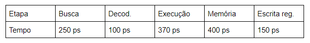

Como vimos, a implementação de uma arquitetura pipeline possui vantagens em relação à monociclo. Mas existem alguns problemas associados, como o tempo que leva para escrever e ler dos registradores intermediários. O tempo do ciclo de clock também vai precisar sofrer algumas alterações. Vamos ver, com um exemplo hipotético, como um processador com pipeline se comporta em relação a um monociclo.
Suponha que o processamento de uma instrução envolva 5 etapas: busca, decodificação, execução, acesso à memória e escrita no banco de registradores:
Agora vamos analisar o número de instruções por segundo que cada arquitetura pode processar. Vamos considerar que a escrita e leitura nos registradores intermediários leva 20ps para ocorrer.
Monociclo
Tempo de ciclo
Na monociclo, o tempo de ciclo é a soma dos tempos de cada etapa. Assim, o tempo de ciclo é 250 + 100 + 370 + 400 + 150 = 1270 ps.
Clocks por instrução
Como o nome já diz, na monociclo temos 1 ciclo de clock por instrução.
Throughput
É uma regra de três simples: se temos 1 clock por instrução, e cada ciclo leva 1270 ps para acontecer, então temos que o número de instruções por segundo é (1270 * 10⁻¹² * 1)⁻¹ ≃ 7,87 * 10⁸.
Pipeline
Tempo de ciclo
Na pipeline, o tempo de ciclo é o tempo que leva para finalizar a etapa mais lenta da instrução, mais o tempo para escrita nos registradores intermediários. Assim, o tempo de ciclo é 400 + 20 = 420 ps.
Clocks por instrução
O número de clocks por instrução é exatamente o número de etapas em cada instrução. Assim, são necessários 5 ciclos para finalizar uma instrução.
Throughput
É aqui que a pipeline fica interessante: mesmo que precisemos de 5 ciclos para finalizar cada instrução, depois que finalizamos a primeira instrução, teremos uma instrução sendo finalizada a cada ciclo de clock. Ou seja, levamos 4 ciclos sem finalizar nenhuma instrução, mas todos os outros ciclos encerrarão uma tarefa. Assim, o número de instruções finalizadas a cada segundo é (420 * 10⁻¹² * 1)⁻¹ ≃ 2,3 * 10⁹.
Conclusão
Comparando os resultados, temos que a arquitetura pipeline, nesse caso, apresenta uma performance aproximadamente três vezes mais rápida que a performance da arquitetura monociclo.
Cabe a observação de que, como o tempo de ciclo da pipeline é o tempo para finalizar a etapa mais lenta (+ o tempo de escrita nos registradores), esse tipo de arquitetura é ainda mais rápido quando os tempos para executar cada etapa são próximos: se o tempo de escrita nos registradores tendesse a zero, não houvesse problemas de dependência e desprezarmos o tempo que leva para termos uma instrução sendo finalizada por ciclo, a pipeline seria tão mais rápida quanto fosse o número de etapas. Se tivéssemos 20 etapas de 50 ps cada, teríamos 2 * 10¹⁰ instruções por segundo. Se tivéssemos 100 etapas de 10 ps, teríamos 10¹¹ instruções por segundo, e assim por diante, ad infinitum.
Mas, é claro, o tempo de escrita nos registradores não pode ser desprezado, principalmente se o tempo da etapa mais longa for curto. Também temos problemas de dependências, quando uma instrução futura precisa que uma instrução passada tenha sido finalizada. Esse fator deixa a pipeline mais complexa e limita o seu potencial, mas nem por isso ela deixa de ser muito eficiente em relação à performance da arquitetura monociclo.